Caso 018 · Lacol · 2018 · vivienda colectiva (cooperativa)
Dos cuerpos y una plaza de sombra. Una masa de ladrillo pegada a la calle, que da la espalda al ruido y sube a captar el sol de invierno en su última planta; un cuerpo ligero de acero ante el parque de Can Batlló; y entre ambos una plaza fresca que lleva la brisa del parque a la calle.
Sintetiza el lugar (ruido al NO, parque al SE, eje del solar a 45° del sur, medianeras de unos 18,6 m que dejan la plaza sin sol en invierno), el programa (una comunidad de hogares de tamaños distintos con espacios comunes), la composición (masa, vacío, cuerpo) y la construcción (muros de carga de ladrillo cada 3 m frente a pilares de acero cada 5 m).
Estereotómica: la masa NO (16 m de fondo, sótano a −3,10 y siete niveles hasta +20,10). Muros de carga de ladrillo de 0,40 m en x = 0, 3, 6, 9, 12 y 15, forjados de bovedilla de 3 m de luz y cubierta plana de hormigón. La gravedad baja de forma continua y los muros se perforan para buscar la luz. Está hundida 3,10 m (sótano de hormigón con aljibe). Tectónica: el cuerpo SE (PB+2, azotea a +9,30). Pilares de acero de 0,25 m en x = 0, 5, 10, 15 e y = 28, 34, 40, forjado seco de madera y vuelo de 1,8 m sobre la terraza en N1 y N2. Cada pilar tiene otro debajo y cae en una línea de tabique. Plano horizontal: la azotea a +9,30 separa el aire libre de las viviendas; solo asoman el remate del ascensor S (3,6 m, exento, junto al núcleo) y la barandilla. Núcleos: N (masa, x 9-15) y S (cuerpo SE, x 10-15), cada uno con escalera de dos tramos (1,40 m y 1,20 m), ascensor y pasillo central de 1,7 m. La plaza no lleva circulaciones aéreas.
Altura solar al mediodía: 72,1° (21 jun), 48,6° (equinoccio) y 25,2° (21 dic). Como el eje está a 45° del sur, en la sección valen 77,1°, 58,1° y 33,6°; por la mañana del 21 dic, 13,0° (9 h) y 20,2° (10 h). S01 los dibuja con su fecha y hora.
Sistema proporcional: módulo de 3,0 m (dormitorio de 2,6 m netos más muro de 0,40 m); fila de 7,2 m (dormitorio con estar); plaza de 12 m = 4 módulos; pasillo de 1,7 m; comedor de 4 celdas. El hogar crece o se reduce abriendo puertas en los muros de carga (dormitorio F2-C, «bisagra» entre F2-B y el pasillo).
Ladrillo cerámico cara vista (tierra cocida, tradición del barrio y de las naves de Can Batlló) en la masa; hormigón en sótano y forjados; acero reciclado y madera en el cuerpo SE por construcción seca y economía (~1.000 €/m² frente a 2,6-2,7 M€ del encargo). Alzados y vistas en blanco: la forma, la sección y la luz son lo que se lee.
| Exigido | Propuesto | Cumple / desviación |
|---|---|---|
| Situación, plantas, secciones, alzados, detalle de fachada, exteriores, memoria | U01, P01-P05, S01-S03, D01, U02, V01-V02, memoria | cumple |
| Personas: unas 50 | 37 + 2 invitadas | desviación (−22 %): el fondo de 15 m con dos fachadas limita los dormitorios con ventana; una segunda habitación sin ventana no cumple el Decret 141/2012 |
| Superficie construida 2.250-3.750 m² | ≈ 2.270 m² (útil interior 1.988 m²) | cumple, en el extremo bajo; la marca la plaza; ≈ 58 m² por persona (habitual 40-60) |
| Cocina-comedor común | 85 m² (N5) | cumple |
| Lavandería común | 43 m² (PB) | cumple |
| Sala polivalente | 65 m² (N5) | cumple; aforo 50 |
| Vivienda de invitadas | 26 m² con baño (N1 cuerpo SE) | cumple, justo en el mínimo |
| Salud y cuidados | 35 m² (PB) | cumple |
| Almacenes, bicicletas, objetos, herramientas | 65 + 22 m², 45 m² bicicletas, 32 m² taller | cumple; bicicletas: 24 plazas dibujadas (tres soportes de 4,0 m a 0,6 m por plaza) |
| Coworking (opcional) | 35 m² | cumple |
| Azoteas y exteriores comunes | azotea 186 m², plaza 180 m², terraza 27 m² | cumple |
| Presupuesto 2,6-2,7 M€ | no calculado; sistema seco arriba y masa de ladrillo | no verificado |
| Planeamiento: altura, ocupación, edificabilidad | no constan; masa de +20,10 (1,5 m sobre el vecino supuesto) | por consultar en la MPGM |
| Decret 141/2012: altura libre ~2,50 m | N1-N4 2,80 m; N5 4,25 m; sótano 2,80 m | cumple |
| DB-SI: salida única ≤ 50 personas, recorrido ≤ 25 m, < 28 m; vivienda = sector | núcleo N y núcleo S; recorrido ≤ 15 m; N5 con aforo 50; altura 20,1 m | cumple |
| DB-SUA: ascensor > 2 plantas; barandilla 0,90 m (1,10 m si > 6 m) | ascensor N de −3,10 a +15,50 y S de PB a azotea; barandillas de 1,10 m | cumple |
| DB-HE zona C2 | masa térmica, aislante de 8 cm en la fachada, reveses de 0,40 m | sin cálculo de transmitancia: pendiente de proyecto de ejecución |
Solar sin edificar: no hay edificación existente.
| Elemento | Material | Acabado |
|---|---|---|
| Muros de la masa | ladrillo | ladrillo cara vista |
| Sótano | hormigón | hormigón visto |
| Tabiques | yeso | enlucido |
| Forjados de la masa | hormigón | hormigón |
| Forjados del cuerpo SE | madera | madera |
| Muros del cuerpo SE (PB-N2) | metal | chapa |
| Núcleo, aljibe y patinillos | hormigón | hormigón |
| Cubiertas | hormigón | grava sobre impermeabilización (ver D01) |
Los baños de F1 y F2 y el aseo de F2 se apilan de N1 a N4 junto a tres patinillos de 0,6 × 0,6 m que suben hasta 0,6 m sobre la cubierta, donde ventilan. El aljibe del sótano recoge el agua de lluvia para el riego de la plaza. Contadores e instalaciones en el sótano (43 m²). El ascensor N sirve de −3,10 a +15,50 y el S, de PB a la azotea.
Fachada: ladrillo cara vista 12 cm, aislante de lana mineral 8 cm, muro de carga de ladrillo 20 cm y enlucido de yeso (≈ 0,41 m; el modelo usa 0,40 m). Cubierta: grava 5 cm, impermeabilización, aislante 12 cm, formación de pendientes 8 cm y forjado de hormigón 30 cm. Solera: terminación 3 cm, hormigón 20 cm y grava 15 cm.
Csa (verano caluroso y húmedo, invierno suave): la masa de ladrillo almacena inercia; los huecos SE se defienden con reveses de 0,40 m (sin contraventanas); el vuelo de 1,8 m protege N1 y N2; la ventilación cruzada NO-SE pasa por el pasillo y el hueco de la escalera; la plaza con árboles de hoja caduca da sombra en verano; el sol de invierno se capta en el comedor de N5 y en la azotea.
Itinerario accesible dibujado en P02: calle, zaguán y ascensor N; plaza, zaguán del núcleo S y ascensor S; el aseo accesible de PB está junto al zaguán y el de N5, junto al comedor. Puertas de uso público de 0,90 m o más. Cada cuerpo tiene un núcleo propio: el núcleo S sirve a N1, N2 y la azotea con salida directa a la plaza por el zaguán. N5 (15,5 m) tiene una sola escalera: aforo máximo 50 personas; las asambleas mayores se hacen en la azotea o en la plaza. Las plantas de vivienda forman sectores propios.
Lo que impone el encargo y se comparte con la obra original: una parcela estrecha entre medianeras, un programa común (comedor, lavandería, sala, invitadas, salud, almacenes, azotea), un vacío que lleve luz a un fondo de 42 m, el clima mediterráneo, el coste contenido y el ascensor. En qué se aparta: no hay un bloque único con patio central cubierto ni galerías de acceso; el vacío es una plaza descubierta y desigual entre dos cuerpos con dos estructuras distintas (ladrillo y acero), no una estructura única de madera con policarbonato. Desde la teoría: el lugar (ruido NO, parque SE) y el programa piden una parte anclada y otra abierta (estereotómico frente a tectónico) y el sol de invierno solo llega alto, así que se capta arriba y no en el patio.
El soleamiento calculado (alturas solares en los solsticios y cálculo 3D con vecinos) sustituye a la maqueta puesta al sol. Los alzados se dibujan ortogonales a la calle: el solar gira 45° respecto al norte, y los puntos E/O de sus extremos son aproximados. El supuesto de vecinos (PB+5 hasta y = 28, naves de 8 m después) y la forma del solar son hipótesis del encargo «a comprobar». Las láminas P02-P05 y U02 tienen ocupación inferior al 60 % porque el solar es una franja de 15 × 42 m: agrupar más plantas obligaría a un formato ilegible. La escalera N (x 9-15, y 0-5,9 en cada planta de la masa) es el hueco de dos tramos, el rellano intermedio y el ascensor: no es superficie útil sin amueblar. Los contenedores de basuras salen por el zaguán a la calle (8 m, recorrido rotulado en P02).
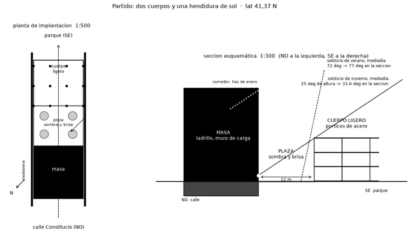
C1 · Croquis 1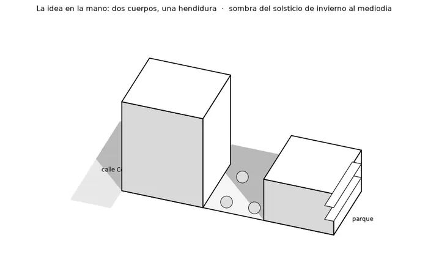
C2 · Croquis 2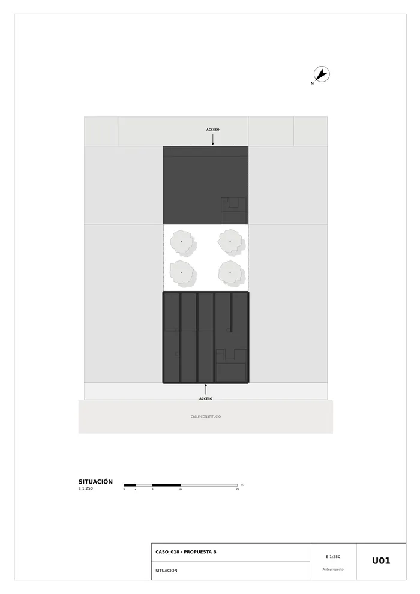
U01 · Situación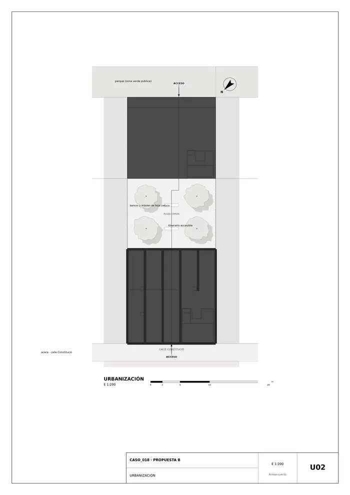
U02 · Urbanización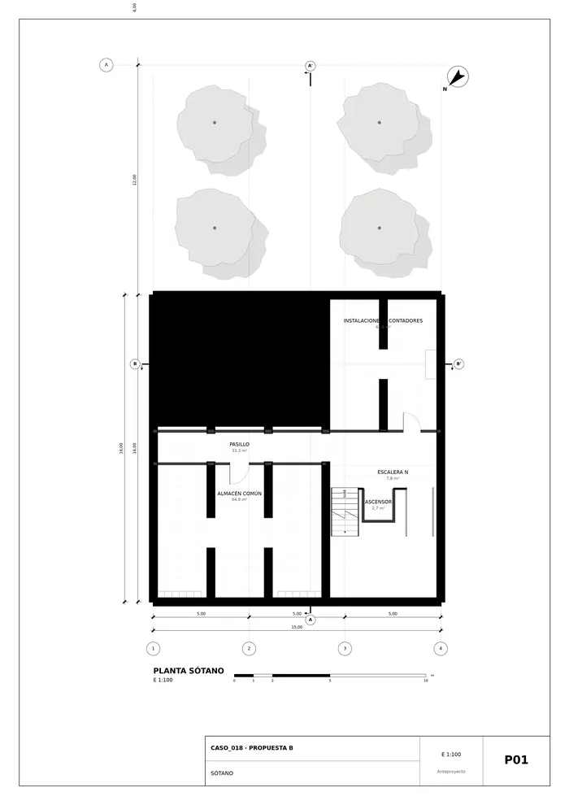
P01 · Sótano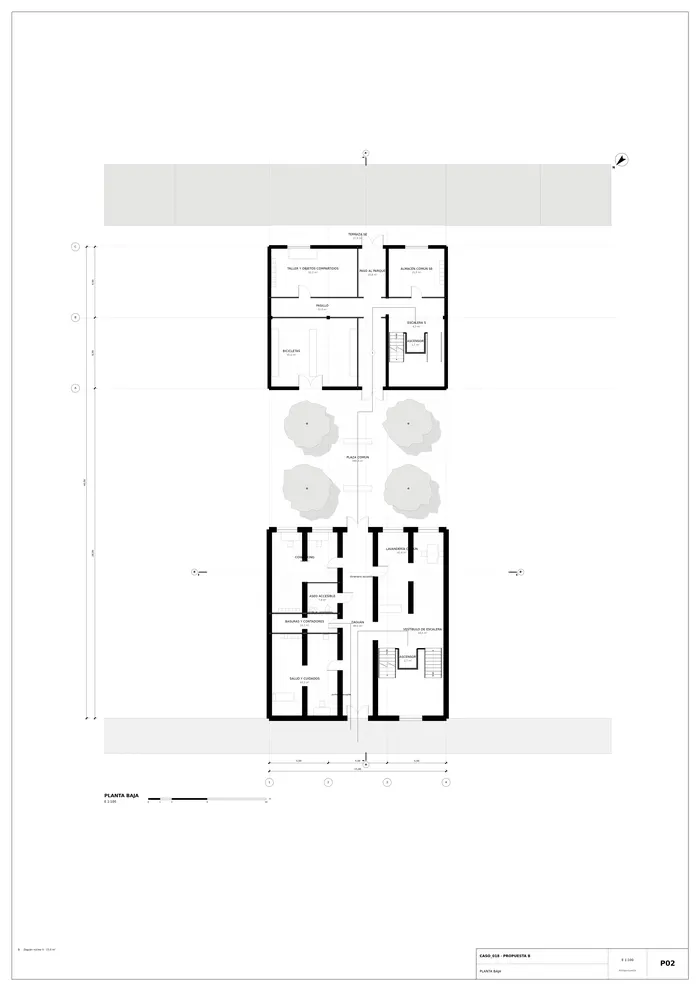
P02 · Planta baja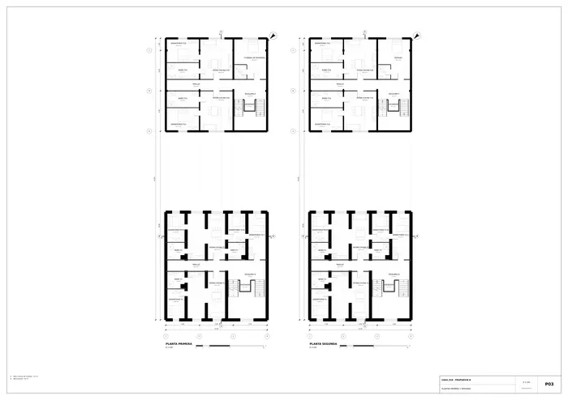
P03 · Plantas primera y segunda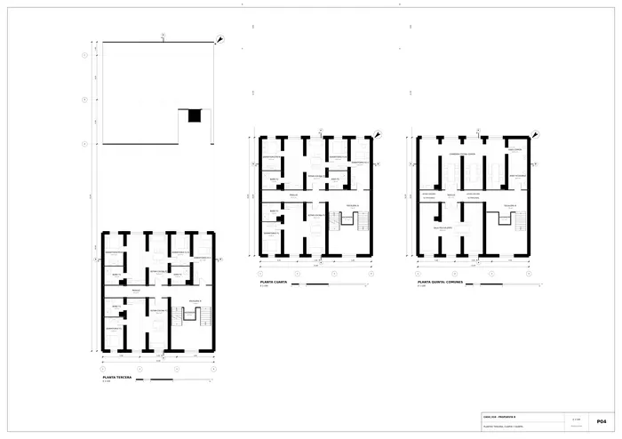
P04 · Plantas tercera, cuarta y quinta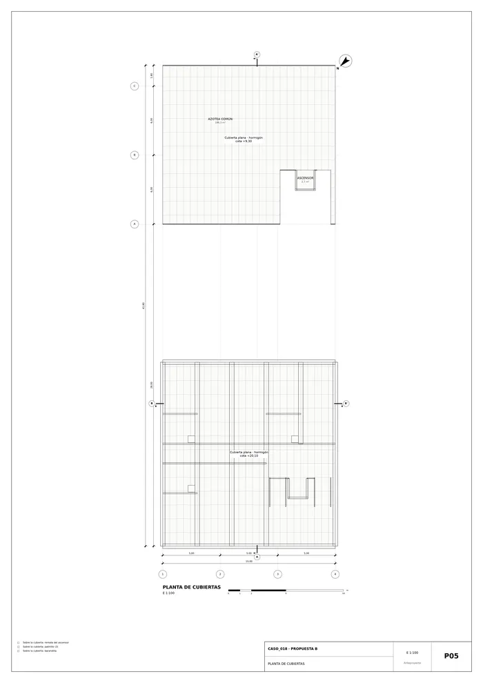
P05 · Planta de cubiertas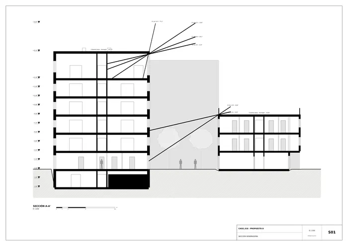
S01 · Sección generadora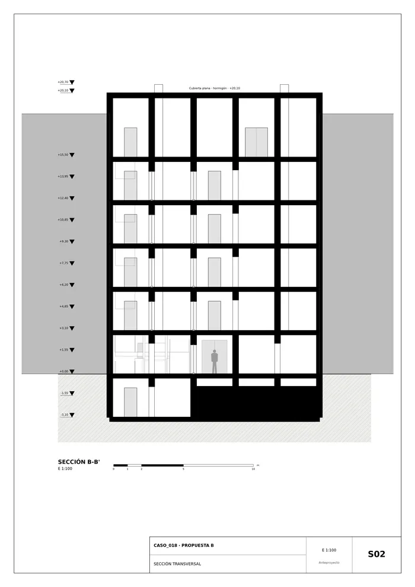
S02 · Sección transversal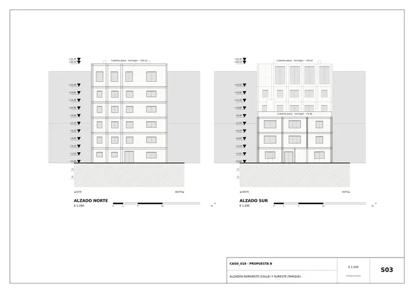
S03 · Alzados noroeste (calle) y sureste (parque)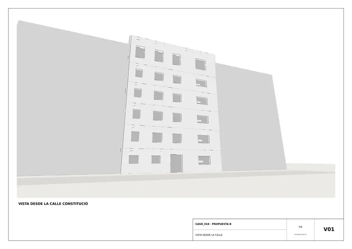
V01 · Vista desde la calle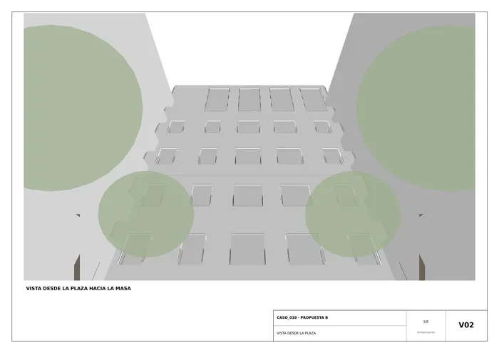
V02 · Vista desde la plaza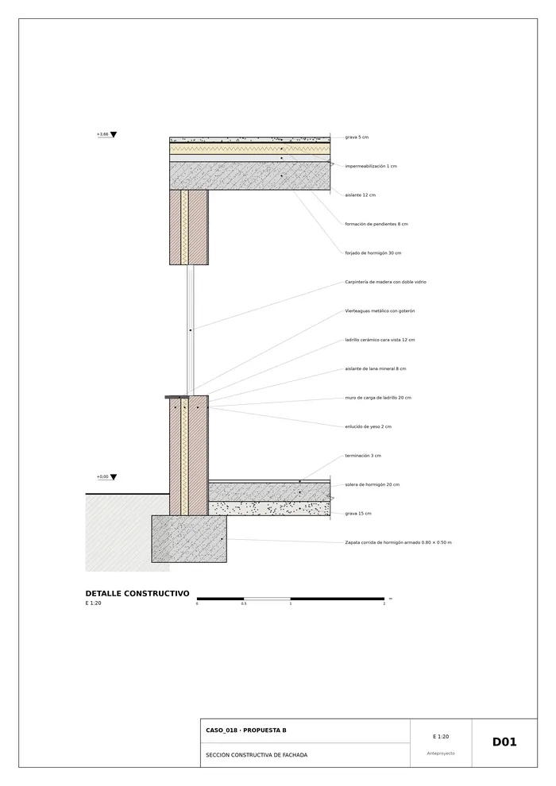
D01 · Sección constructiva de fachadaMemoria de la propuesta tal como la entregó el sistema. Se han omitido las notas internas del proceso (revisiones, control de reconocimiento y referencias a archivos de trabajo).